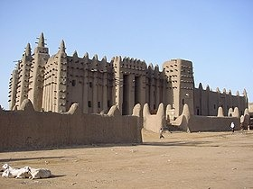
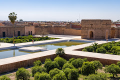
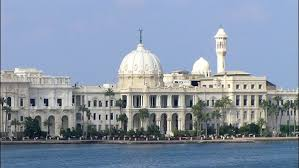

تعرف على خلاصة خبرتنا
الغني عن التعريف واحد عجائب الدنيا الهرم الاكبر الذي بناه الملك خوفو والذي استغرق بنائه 20 سنة والذي كان ارتفاعه عند بنائه حوالي 148 متر تقريبا لكن بسبب فقدان القطعة الهرمية اصبح الان تقريبا 138 متر
المسجد الكبير هو أكبر صرح من الطوب اللبِن في العالم، ويعتبره الخبراء أعظم مثال للمعمار في الرقعة الأفريقية ومدينة جينية تعد من أقدم المدن المعروفة في جنوب الصحراء الكبرى في القرن السادس عشر تحولت إلى مركز للعلوم الإسلامية وترتفع فوق قبلة المسجد ثلاث مآذن يميزها عن المآذن المعتادة انها مربعة وتستند إلى 18 دعامة. لكن كلا منها ينتهي بالمخروط التقليدي الذي يحمل بيضة نعامة. وللمبنى فناء يعادل مساحة المصلى الذي يستند إلى 90 عمودا من الخشب وتتخلل سقفه نوافذ تفتح إذا ارتفعت درجة الحرارة فيه

هو : Le Palais Hindou)بالفرنسية) قصر البارون إمبانقصر تاريخي مستوحى من العمارة الهندية شيده المليونير البلجيكي البارون ادوارد إمبان) 20 سبتمبر 1852 - 22 يوليو 1929(، يقع القصر في قلب منطقة مصر الجديدة بالقاهرة يقع القصر على مساحة 12.5 ألف شرفات القصر الخارجية محمولة على تماثيل الفيلة الهندية، والعاج ينتشر في الداخل والخارج، والنوافذ ترتفع وتنخفض مع تماثيل هندية وبوذية ،أما داخل القصر فكان عبارة عن متحف يضم تحف وتماثيل من الذهب والبلاتين، كما ويوجد داخل القصر ساعة أثرية قديمة يقال أنها لا مثيل لها إلا في قصر باكنجهام الملكي بلندن توضح الوقت بالدقائق والساعات والأيام والشهور والسنين مع .توضيح تغييرات أوجه القمر ودرجات الحرارة القصر من الداخل حجمه صغير، فهو لايزيد علي طابقين ويحتوي على 7 حجرات فقط. الطابق الأول عبارة عن صالة كبيرة وثلاث حجرات 2 منهما للضيافة والثالثة استعملها البارون إمبان كصالة للعب البلياردو، أما الطابق العلوي فيتكون من 4 حجرات للنوم ولكل حجرة حمام ملحق بها .وأرضية القصر مغطاة بالرخام وخشب الباركيه، أما البدروم .)السرداب( فكان به المطابخ والجراجات وحجرات الخدم صنعت أرضيات القصر من الرخام والمرمر الأصلي حيث تم استيرادها من إيطاليا وبلجيكا، وزخارفه تتصدر مدخله تماثيل الفيلة كما تنتشر أيضاً على جدران القصر الخارجية والنوافذ على الطراز العربي وهو يضم تماثيل وتحفاً نادرة مصنوعة بدقة بالغة من الذهب والبلاتين والبرونز، بخلاف تماثيل بوذا .والتنين الأسطوري ويتكون القصر من طابقين وبدروم )السرداب(، وبرج كبير شيد على الجانب الأيسر يتألف من 4 طوابق يربطها سلم حلزوني تتحلى جوانبه الخشبية بالرخام، وعلى درابزين )سور( السلالم نقوش من الصفائح البرونزية مزينة بتماثيل .هندية دقيقة النحت وقد صمم القصر بطريقة تجعل الشمس لا تغيب عن حجراته وردهاته أبداً، واستخدم في بنائه المرمر والرخام الإيطالي والزجاج البلجيكي البلوري الذي يرى من في الداخل كل من في الخارج وبه برج يدور على قاعدة متحركة دورة كاملة كل ساعة ليتيح لمن يجلس به أن يشاهد ماحوله في جميع الاتجاهات، وكان الطابق الأخير من القصر هو المكان المفضل للبارون أمبان ليتناول الشاي به وقت الغروب وكان حول القصر حديقة فناء بها زهور ونباتات نادرة كما يوجد بالقصر نفق يصل بين القصر والكنيسة العريقة "كنيسة .البازيليك" الموجودة حتى الآن
قصر البديع أثر من الآثار الهندسة المعمارية بالمغرب بمراكش، بناه السلطان السعدي أحمد المنصور الذهبي )1603-1578( شهورا قليلة بعد توليته الحكم احتفالا بانتصاره على البرتغاليين في معركة وادي المخازن عام 1578م. اختار أحمد المنصور الزاوية الشمالية-الشرقية لبناء هذا القصر الذي يخصص لإقامة الحفلات وتنظيم الاستقبالات الرسمية. وقد انطلقت الأشغال به بعد شهر دجنبر من سنة 1578 واستمرت دون انقطاع لمدة 16 سنة
قصر رأس التين يعد من أقدم القصور الموجودة في مصر ، ويطل على شاطئ البحر الأبيض المتوسط بمدينة الإسكندرية وقصر رأس التين أحد المعالم التاريخية والأثرية بالإسكندرية ،وتعود الأهمية التاريخية لهذا القصر إلى أنه القصر الوحيد الذي شهد وعاصر قيام أسرة محمد علي باشا في مصر والتي استمرت نحو مائة وخمسين عاما، ويعد أكبر قصور الإسكندرية وفيه أدخل التليفون العام 1879م أواخر فترة حكم الخديوي إسماعيل بدأ محمد علي في بناء قصر رأس التين عام 1834م ليضمه إلى قصوره بالإضافة إلى القصور الأخرى التي كان يملكها في الإسكندرية مثل قصر المحمودية وقصر إبراهيم باشا وقد استعان في بنائه وإصلاحه فيما بعد بمهندسين أجانب منهم المهندس الفرنسي سيريزى بك، والذي استقدمه محمد علي عام 1828م لإنشاء دار الصناعة والإشراف عليها، وقد عهد إليه بتصميم جناح الحرم في هذا القصر، كما شارك في بنائه مهندسان آخران هما روميو والمسيو )السيد( ليفرويج، وقد تم بناء هذا القصر عام 1845م، وقد استغرق بناؤه أحد عشر عامًا، ولكن أعمال تكميلية وإنشاء أجنحة إضافية ظلت قائمة به إلى عام 1847حيث تم افتتاحه رسميًا